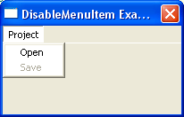

DisableMenuItem()
语法
DisableMenuItem(#Menu, MenuItem, State)概要
Disable (or enable) a menu item in the given menu.
参数
#Menu The menu to use. MenuItem The number of the menu item to disable or enable. State The new state for the menu item. A value of 1 disables the menu item and a value of 0 enables it.
返回值
无.
示例
If OpenWindow(0, 200, 200, 200, 100, "DisableMenuItem Example") If CreateMenu(0, WindowID(0)) MenuTitle("Project") MenuItem(1, "Open") MenuItem(2, "Save") DisableMenuItem(0, 2, 1) ; disable the second menu item (Save) EndIf Repeat Until WaitWindowEvent() = #PB_Event_CloseWindow EndIf
参阅
MenuItem(), SetMenuItemState(), SetMenuItemText()
已支持操作系统
所有